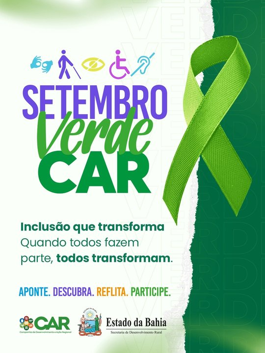

O que é a Trilha da Inclusão?
Ao longo de setembro, novos QR Codes vão aparecer espalhados pela CAR — um de cada vez, a cada poucos dias. Cada um leva a uma experiência diferente: informação, reflexão, quiz ou participação.
Fique de olho nos próximos cartazes! Assim que um novo QR Code for liberado, é só apontar a câmera do celular e participar. Sua participação é sempre anônima — nenhuma página pede nome, matrícula ou e-mail.
Árvore da Inclusão
Durante a trilha, vamos reunir as frases e reflexões de quem participar para construir, juntos, a Árvore da Inclusão da CAR.
No encerramento do mês, o resultado completo — com as frases mais marcantes e os números da campanha — será apresentado a todos.